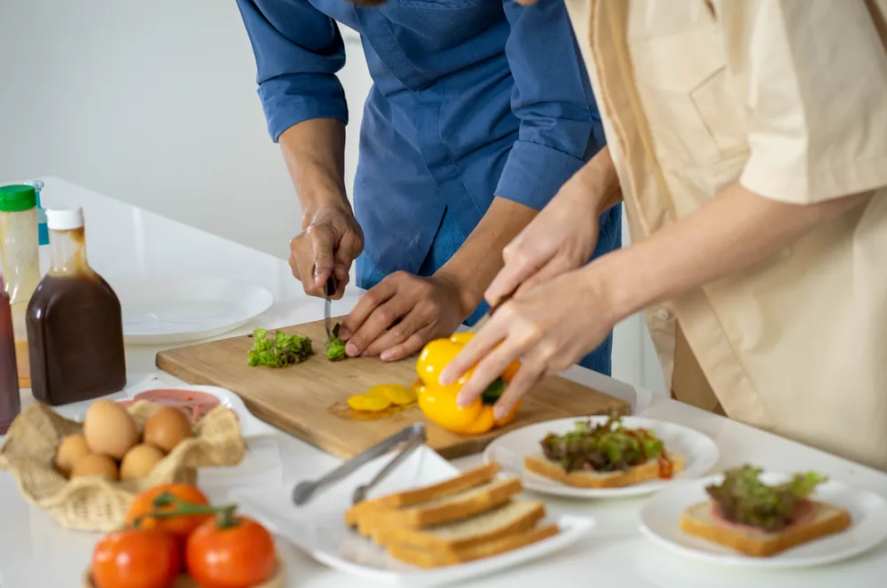

Cuidado para quem vive com diabetes e para quem está ao lado.
Apoio gratuito em nutrição, saúde emocional, educação e direitos para quem vive com diabetes e suas famílias em Sorocaba/SP.
Ninguém precisa cuidar da saúde sozinho.
Somos assistentes sociais, nutricionistas, educadores, especialistas jurídicos e voluntários. Acolhemos cada pessoa pelo que ela é, não só pelo diagnóstico.
O que fazemos
Um cuidado completo, para a pessoa e para quem convive com ela.
-
Orientação nutricional
Comer bem para prevenir complicações e viver melhor.
-
Apoio emocional
Grupos e aconselhamento para dividir o peso e trocar experiências.
-
Culinária saudável
Receitas simples, nutritivas e cheias de sabor.
-
Educação em diabetes
Glicemia, medicamentos e autocuidado explicados com calma.
-
Assessoria jurídica
Orientação gratuita para garantir direitos.
-
Acolhimento social
Escuta e apoio para famílias em situação de vulnerabilidade.
Seu apoio faz parte dessa história.
Cada contribuição vira cuidado de verdade: uma consulta, uma oficina, uma família mais tranquila.
Doe via Pix
Qualquer valor faz a diferença.
Instituto Saúde em Equilíbrio e Desenvolvimento Social CONFIRMAR razão social
CNPJ 54.339.288/0001-52
Chave

40 anos perto de quem precisaMais de quarenta anos de história.
Com mais de 40 anos de história, o Instituto Saúde em Equilíbrio e Desenvolvimento Social, anteriormente conhecido como Dispensário Irmã Sheila, promove saúde, bem-estar e qualidade de vida, com atenção especial às pessoas com diabetes, familiares e cuidadores, fortalecendo uma rede de apoio que valoriza as necessidades de cada indivíduo.
- Fundação
- 1986
- Pessoas impactadas
- +000 PENDENTE: número e período
Transparência que fortalece a confiança.
Prestamos contas de cada passo. Nossos documentos estão abertos a todos.
- Transparência Social Estatuto, balanços, convênios e certificações. Site externo. (abre em nova aba)
- Documentos por anoTudo organizado por ano e categoria.
- Portal da Transparência da PrefeituraEm breve. PENDENTE: link
Dúvidas frequentes
Não achou o que procurava? Fale com a gente.
Para quem é o atendimento?
Para pessoas com diabetes, seus familiares e cuidadores. Também acolhemos famílias em situação de vulnerabilidade social, com ações de proteção social básica.
É pago?
Não. Os atendimentos são gratuitos. CONFIRMAR: todos os serviços são gratuitos?
Que tipo de suporte vou ter?
Um cuidado completo, para você e para quem convive com você:
- Orientação nutricional para prevenir complicações e viver melhor;
- Apoio emocional, em grupos e aconselhamento;
- Culinária saudável, com receitas simples e nutritivas;
- Educação em diabetes: glicemia, medicamentos e autocuidado;
- Assessoria jurídica gratuita para garantir direitos;
- Acolhimento social para famílias em situação de vulnerabilidade.
Como chego até o instituto?
Você pode nos procurar por conta própria, sem encaminhamento. Também chegam até nós pessoas encaminhadas pela rede pública e pelo CREDAC, além das que encontramos pela nossa busca ativa.
Atendemos de segunda a sexta, das 8h às 17h, na Rua Jocelino Guariglia, 150, Jardim São Marcos, Sorocaba/SP. Se preferir, chame no WhatsApp (abre em nova aba). PENDENTE: validar com a Núria
Vamos conversar?
Venha nos conhecer, tire suas dúvidas ou descubra como ajudar.
Falar com o instituto (abre o WhatsApp)PENDENTE: confirmar contatos oficiais